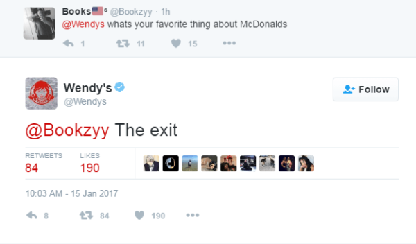
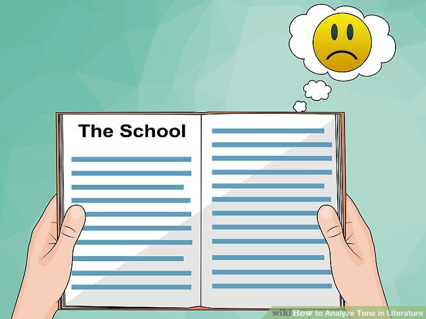
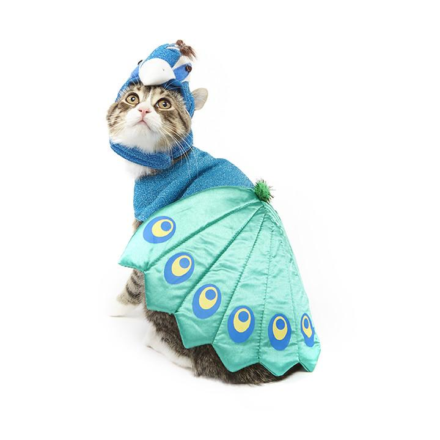

How copywriting really gets into your brain
13 Minute read - Maybe have a sandwich and some tea while you go through it
Intro
We are living in a time when companies want to express themselves as a person more than a company more than ever, and it's key to their presence in the digital world. From execs to creatives, a crazy amount of people all work together to build a tone that best represents what they do and summarises the brand's emotional identity.
Emotional identity is the core part of that, ensuring that you speak in a way that makes your audience feel something. Warm and friendly, respectful, impulsive, cosy, excited - chances are you can associate a brand to all of these and that is the creative work of both market researchers and good old copywriters. Artists too, but let's focus on words for now.
So how do writers actually craft things that make people feel? And what on a psychological level gives an audience an emotional reaction to written words alone?

hhgg
How do they do it?
Let me start this section off by highlighting a couple of things: first of all, copywriters come in oh so many shapes and sizes. Content writers, social media writers, marketing writers, SEO specialists, pitch writers, and many more on top of that with blurred lines between them. UX writers, to add further confusion, could be considered ‘digital copywriters’ if you wanted to annoy one
The common theme between them, and why I feel okay casting a wide net with my explanations here, is that they all speak with the ‘brand voice’. Every one of these roles uses language for a different goal, but they have to be speaking as if one entity was saying it.
Let’s break language down a little further then and explore the ways that a ‘brand voice’ is actually made.
Tone
Tone is the word that will follow every aspect of your life as a copywriter, and is undeniably integral to the role. The tone that you write in covers pretty much everything about what you’re writing, from when to use and break grammar rules, to whether you pop an emoji in your sentence, to the very language that you use.
These two sentences are a good start to exploring tone:
“Try Elmer’s Honey to start your day off sweet.”
“Elmer’s Honey is a natural product of bees and works well with many breakfast foods.”
They both have the same goal, to sell honey, but their tone is vastly different. The top sentence has a sing song-y sibilance (melodic ‘s’ sounds for emphasis) to it that makes it feel gentle and inviting, but playful. It would work well for a family-minded audience, for example, whereas the bottom one would work well for, I guess, a bee minded audience? It's written practically but it sounds flat and clinical, at least compared to the top sentence.
That practical tone approach is actually super important in technical writing though. This is the practice of writing clear instructions for a product, and it doesn’t need you to feel anything towards it at all. It delivers instrructions. That's it.
I’m going to revisit that ‘feel something’ phrasing later, but hopefully this shows you the role that the most well known element of copywriting, tone, has in this whole thing.

Reading is hard when your book is depressed
But, wait. Where do writers pluck this tone from? They can’t just choose one at random until they settle on one that works after all! That would be inefficient, and efficiency is the name of the game in today’s economy. Time for a Rocky style montage of some people looking at data!
How do your target audience speak? Do they use contractions? Emojis? Do they expect a more formal tone, or can you approach them more casually? What do they like about your product? Why do they use it? How do they use it? There are a million and one questions you could ask, and each one gets you a little closer to shaping the kind of voice you want your company to have.
Keywords
On top of this, copywriters -- and especially SEO minded ones -- think about keywords an awful lot. This is another topic that could be an article in itself, but, essentially, these are the words that you want to use for search engines like Google to direct to your page, as well as being the words that customers latch onto when thinking about the product.
If you have a company that specialises in stuffed corgi toys, the most obvious keywords here are going to be things like ‘corgi’ or ‘stuffed toy, and it’ll be hard to avoid using these naturally in your copy anyway. But why not push the boat out? Why settle for the same keywords that everyone else is using? Finding a niche will drive up sales rapidly, after all...
There are hundreds of tools online for analysing stuff like this, but it will also be informed by research on how your audience speaks. You might end up targeting things like ‘adorable corgi’, or ‘doggo stuffed toy’ based on that too, but this is an art form in itself.
I should note that SEO is a complicated beast, and goes far deeper than merely what is written on a website. The very code underlying that website needs to be written with it in mind, from special HTML tags to the very architecture of the site (what links to what), but this is very much a topic for another day.
Peacocking

Suxh... Such beautiful feathers
Another technique that writers use to capture their audience is ‘peacocking’. In nature, peacocks divert a lot of their energy into growing big, beautiful tails that don’t benefit them in the wild at all. Sure, a skittish predator might be intimidated, but the tail uses up energy from food and makes moving around and flying far more difficult than it needs to be.
The only benefit of this tail is to attract females; if a male is so good at surviving and gathering food that he has energy to spare into growing a big, clumsy, bloody beautiful tail, it must have some damn good genes.
In the advertising world generally, peacocking takes the form of making your adverts the most striking ones out there. Doing something different. Being bold. Attracting all those peahens. People are much more sensitive to things that break patterns than you might expect (think of Wendy’s witty tweets and the chatter around them).
My favourite Mad Men quote fits nicely here:
"One wants to be the needle in the haystack, not the haystack"
This is referred to in memory psychology as the isolation effect (Schmidt, 1991) and highlights that an item in a list that doesn’t fit in with the other items (e.g. “T-Rex” in a list of vegetables) is more memorable, and what do copywriters want if not to make their company memorable?
This is an exciting effect too because it’s been observed on a deeper neurological level, and the neurons involved seem to respond plastically based on electrical activity in the neuron previously. Essentially, different brain cells react to the copy because it's so freeesh, and these neurons are more sensitive because they're not buzzing all the time normally and we get a nice big effect. Different... can be very good (Lynch, 2003).
Is… Is no one else excited about that? Okay.
Anyway! How you make your stuff different is an immense topic and deeply ingrained in culture and the times. It does ultimately come down to the old 'great risk; great reward' thing, but it's another subject worthy of its own article. Sooo...
Ultimately, the most brain worm-y work is going to appeal to your primal lizard brain in some form. Music does it, art does it, games and films do it, and guess what...?
Copy gets all up in our primal brain
I mentioned earlier that good writing makes us feel something, and this feeling - essentially empathy towards the content - is a key part of who and what we are; we are emotional animals, and our capacity for empathy is both immense and a core part of our evolutionary history.
While we see empathy in a similar sense in other species, be it the long term pair-bonding of animals to help raise young or the social group behaviour of apes or wolves, it is humans that took the idea and ran with it. As Dunbar highlights in his book Human Evolution, an increased need to communicate and understand what others feel and mean is what likely led to the rapid increase in our brain volume and, eventually, resulted in some scrawny upright apes becoming a worldwide dominant species.
In the context of copywriting, I want to talk about the neural simulation element of empathy specifically. In essence, when we see someone else doing something, our brains act as if it were us doing it in order to figure out how to react to it. This was first observed with physical actions, discovered in monkeys through simple hand gestures (Rizzolatti, et al. 1996) and later in humans with mouth actions like talking or eating (Ferrari, et al. 2003; Google ‘mirror neurons’ to learn more about the field).
You can see where I’m going with this though: The brain simulates emotional states pretty darn effectively too, be it disgust (Wicker, et al. 2003), fear and anger (Goldman, & Sripada, 2005), pain (Singer, et al. 2004; Jackson, et al. 2005), happiness (Morelli, et al. 2014) and so many more. Impairments in people with brain damage to these observed mirroring areas of the brain also serves to further enforce the finding (Calder, et al. 2000; Adolphs, et al. 2003), so it seems like a nicely robust theory.
You may have heard about all of this before from a study that a lot of news outlets picked up a few years ago about botox users struggling to read the emotions of others. The essential idea here being that the chemical limits muscle movement in the face which, in turn, stops you physically mirroring someone else’s emotional states, negative or positive. The emotional mirroring in the brain likely still happens, but without the physical element you get half of the picture and the other half is surprisingly difficult to decipher (Neal. & Chartrand, 2011).
This separation between the physical micro-mimicry of emotional action and the emotional, internal mimicry of mental states is key in the context of this article. Purely because the vast majority of brand imagery and voice that we consume does not elicit a physical mimicry response in us, but it does get at our internal empathy circuits. We don’t need the other half of the picture in this case, we’re not trying to communicate or relate to the other party in this exchange, we are just interpreting and internalising an emotion or idea that is being shown to us.
Adverts that appeal to our senses broadly, like visual designs or the smell of fresh bread as you walk through a supermarket, are considered ‘sensory marketing’ in the literature (Krishna, 2011; Krishna, & Schwarz, 2013). There isn’t much research directly on written sensory marketing sadly, but that doesn’t mean that we haven’t looked into it tangentially: we have known and explored the fact that we can empathise with characters in books or plays for years, after all (Hammond, & Kim, 2014; Beirl, et al. 2015), so there is a lot of power in written language.
A quick lil' wrap-up
We have established then that interpreting the emotional substance of other people or things is something that we are pretty darn good at, and, in order to do it, we play out the same emotion inside our heads.
To jump back up to the copywriting techniques above, we start to get a picture of why exactly they are so effective: when a piece of text speaks with a tone of voice that you are familiar with, when it speaks in a way that you see and enjoy all the time, when it catches your eye with words or bold attitudes, you genuinely feel something, whether you’re aware of it or not.
It is no secret in psychology that we love things similar to ourselves (less chance of being betrayed compared to unknown quantities; Greenberg, 2010; Curry, & Dunbar, 2013) so when an entire company is speaking to us in a familiar and entertaining voice, we can’t help but be drawn in.
There is a lot that I love about copywriting and UX writing, but I think it’s the interaction with our psychology that excites me the most. Language is powerful, it gave us these (relatively) big brains, and there is clearly a huge place for it even in today’s visuals-centric world.